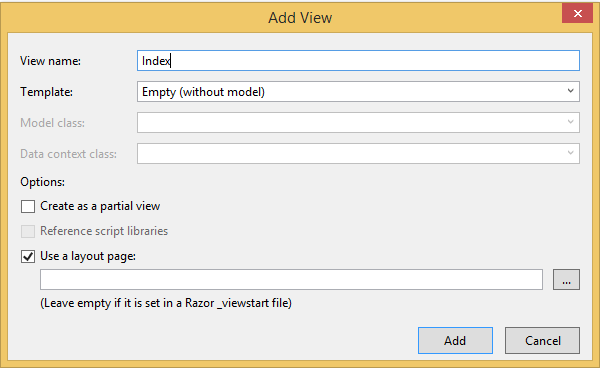

Lage ny Controller
Høyre-klikk på Controllers-mappa og velg:
Add => Controller
Her får man mange valg. Hvis man ønsker kan Visual Studio generere diverse actions på controlleren med tilhørende Views. Vi velger bare Empty MVC5 Controller og døper den PersonController.
Resultatet er en C#-klasse med som arver fra Controller:
namespace MVCintro.Controllers
{
public class PersonController : Controller
{
// GET: Person
public ActionResult Index()
{
return View();
}
}
}
Det ligger ingen spesiell magi bak å legge til Controlleren med Visual Studio -
det hadde fungert like fint å bare lage en vanlig C#-klasse, kalle den for PersonController og arve fra Controller
Legge til View
Høyre-klikk på Views-mappen:
Add => Folder
Kall den Person
Høyre-klikk på Person-mappen:
Add => View
Kall viewet Index. Bruk standardinstillinger:
Skriv litt passende tekst i Viewet og bygg på nytt (CTRL + F5).
Den nye siden er nå å finne på http://localhost:<port>/Person
Lage Model
Høyre-klikk på Models-mappen:
Add => Class
Døp den PersonModel
Legg til felter for id, fornavn, etternavn og telefonnummer:
namespace MVCintro.Models
{
public class PersonModel
{
public int Id { get; set; }
public string FirstName { get; set; }
public string LastName { get; set; }
public string PhoneNumber { get; set; }
}
}
Modellen er ikke nødt til å hete noe med Model, men dette er vanlig slik at utviklere raskt kan gjenkjenne formålet med klassen.
Vise modellen i Show
Lag en ny action i PersonController som tar inn int personId
og rendrer et view med en PersonModel som modell:
public ActionResult Show(int personId)
{
var model = new PersonModel(personId, "Nils", "Jensen", "9161166");
return View(model);
}
PersonModel.
Pro tip: Hvis du skriver new PersonModel(...) før du oppretter konstruktøren kan du trykke på den røde streken og deretter trykke på den røde lyspæra i margen (ALT + Enter) og velge Create Constructor.
public class PersonModel
{
public PersonModel(int personId, string firstName, string lastName, string phoneNumber)
{
Id = personId;
FirstName = firstName;
LastName = lastName;
PhoneNumber = phoneNumber;
}
public int Id { get; set; }
public string FirstName { get; set; }
public string LastName { get; set; }
public string PhoneNumber { get; set; }
}
Vi må også lage oss et nytt view i person-mappa:
Views/Person/Show.cshtml:
@model MVCintro.Models.PersonModel
<h2>Person</h2>
<p>Id: @Model.Id</p>
<p>Fornavn: @Model.FirstName</p>
<p>Etternavn: @Model.LastName</p>
<p>Telefonnummer: @Model.PhoneNumber</p>Bygg på nytt (CTRL + F5) og gå til http://localhost:<port>/Person/Show
Vi får feilmelding fordi vi Show-actionen ber om å få inn en parameter (personId). Vi kan sende den inn ved å skrive http://localhost:<port>/Person/Show?personId=1337
Personen vår skal nå vises.
Pro tip:
I C# har man muligheten til å sette en standardverdi for parametere. Hvis vi feks. ønsker at et kall til http://localhost:<port>/Person/Show skal vise person nummer én kan vi legge sette Show(int personId = 1). For å teste om dette virker må vi bygge på nytt (CTRL + F5).
public ActionResult Show(int personId = 1)
{
var model = new PersonModel(personId, "Nils", "Jensen", "9161166");
return View(model);
}